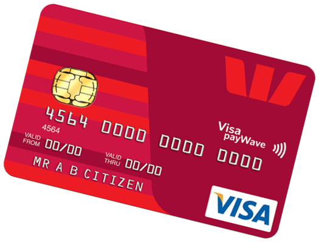

CARDHOLDER DATA & PCI DSS
Cardholder data is personally identifiable information associated to credit or debit card owner. It includes: primary account number (PAN), cardholder name, expiration date, service code (three or four digit value in the magnetic stripe).
This data is encoded in the magnetic stripe, card verification code (CVV), personal identification number (PIN). Remember that PIN is a secret numerical password that should be known only to the cardholder.
The ultimate aim is to eliminate the risks of card data loss and set up decent protection against hackers and thieves, malware and social engineering threats.
Cardholder data is processed by using the PCI DSS (Payment Card Industry Data Security Standard) recommendations.
Some of which are:
- Never store card authentication data and ensure it even when the service is outsourced.
- The less cardholder data stored, the better. Store only the essential data.
- When storing data, verify that it is encrypted by using so called robust protocols.
- Implement two-factor authentication for administrator accesses, especially if the access is from outside the facilities.